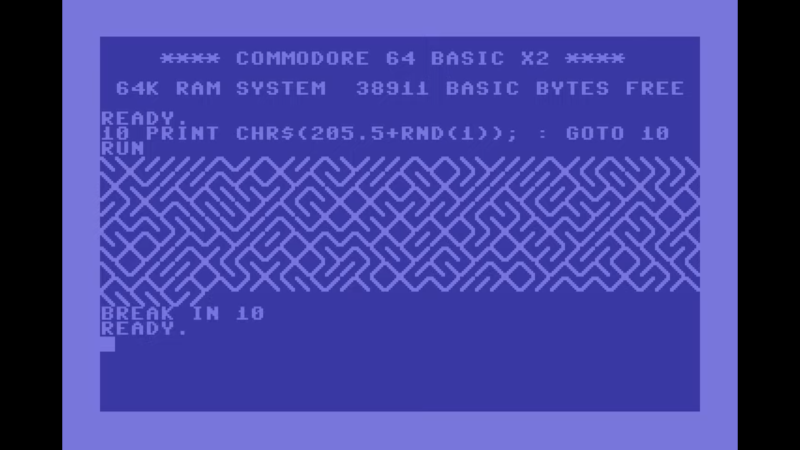
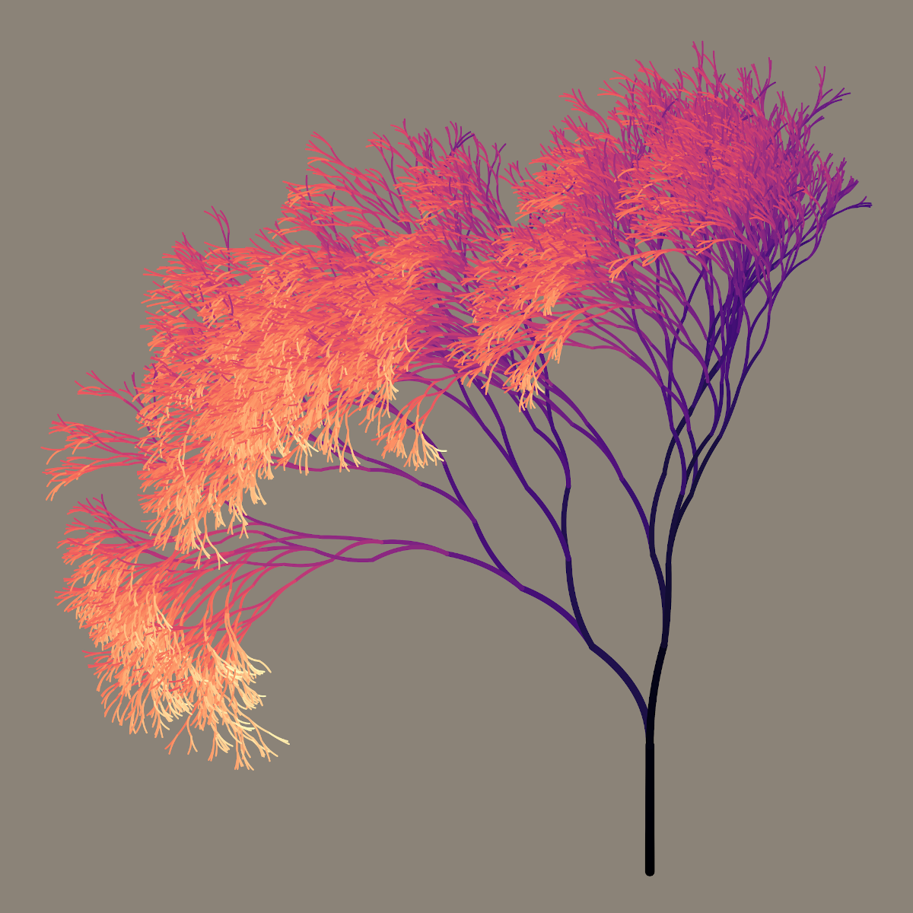

generative design
what is generative design?
a system of rules or a process that produces some outcome
example: "10 PRINT"
print either "/" or "\" at random:

example:
mathematical systems
example:
simulation of physical process
example:
generative rules inspired by nature

example:
data visualisation
example:
"parametric" design
example:
A.I. and machine learning
- generative design is a sort of "meta" design
- results can be unexpected
- generative design is collaboration between designer and system
- communicating through code
elements of generative processes
logic
- creates rules
- decision making (if... then...)

mathematics
- function to define position, colors, shape, state etc
- (can be very simple to very complex!)

randomness
- slight variation
- noise
- "non-deterministic"
input and influence
- conditioned or reacts on some external factor
- e.g. cursor position, other elements, time, music input, weather data etc
exploration!
simulation and nature inspired computing
mathematical models that codify natural processes and systems
rules, equations and schemes
that describe
actions, reactions, movement, and dynamics
of real life phenomena.
particle systems
multi-agent systems

L-systems
diffusion-limited aggregation
differential growth

reaction diffusion